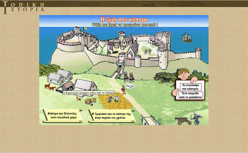

| Εγχειρίδιο Χρήσης |
7.2 «Η ζωή στο κάστρο»«Η ζωή στο κάστρο» αποτελεί μέρος της δεύτερης ενότητας του εκπαιδευτικού λογισμικού και εμφανίζεται αμέσως μετά τις δύο εισαγωγικές οθόνες της ίδιας ενότητας. Εικόνα 7.2.1 Η ζωή στο κάστρο 1 Ο χρήστης μπορεί να πλοηγηθεί σε διάφορα θέματα της ζωής στο κάστρο. Όταν το ποντίκι περάσει πάνω από μία ενεργή περιοχή, εμφανίζεται ο τίτλος του κειμένου που αντιστοιχεί σε αυτή, όπως φαίνεται και στην παρακάτω εικόνα. Κάποιες ενεργές περιοχές κρύβουν ήχους ή κίνηση.  Εικόνα 7.2.2 Η ζωή στο κάστρο 2 Κάνοντας κλικ σε μία ενεργή περιοχή ανοίγει νέο παράθυρο, το οποίο περιέχει το αντίστοιχο πολυμεσικό υλικό (εικόνα, ήχος, κείμενο). Επιλέγοντας τις ενεργές περιοχές «Κάστρα και Πολιτείες στον ελλαδικό χώρο» και «Η Άμφισσα και το κάστρο της στην πορεία του χρόνου» ο χρήστης μεταφέρεται στις αντίστοιχες ενότητες. |